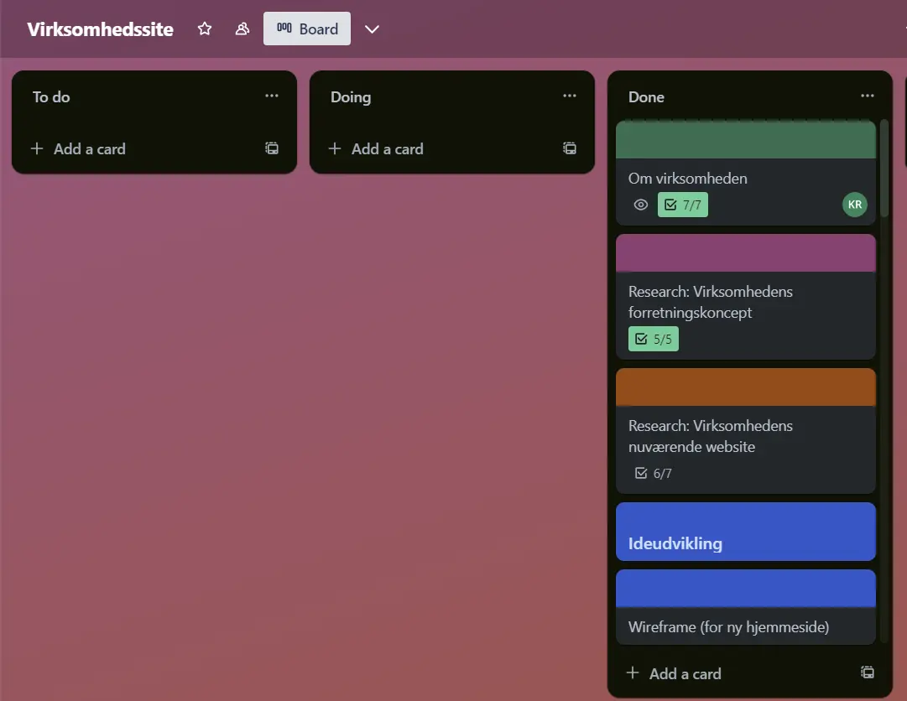

Formål
I vores 4-mandsgruppeprojekt inden for tema 5 - grundlæggende indhold, var hovedformålet at forbedre brugeroplevelsen af en hjemmeside for en selvvalgt virksomhed. Samtidig skulle vi producere en video, der præsenterede virksomheden på en engagerende måde, og denne video skulle integreres på den nydesignede hjemmeside.
Fordelt arbejde med scrum
Før den store opgave, blev vi introduceret til SCRUM. Dette projektstyringsmetode er en måde at fordele arbejdet på et visuelt og struktureret måde med et board med alle de ting, som vi skal nå. Her får vi også nogle roller til at dele ansvaret op.
Rollerne i scrum
Product-owner, som repræsentere interessenterne fra vores virksomhed, og er ansvarlig for at virksomhedens krav og værdier er prioriteret i løbet af vores projekt
Scrum-master, som er en facilitator der fokusere på at skabe et åbent atmosfære, så alle deltagerne føler sig respekteret. De holder øje med processen og sikrer for møder, samt hjælper med at håndtere uenigheder.
Scrum-team, som jeg var en del af, der har en kollektiv ansvar for at udføre arbejdet med deres færdigheder og kompetencer.
Link til scrumMakomiteens Sitemap
Med hjælp fra en af vores gruppemedlemmer, etablerede vi kontakt med en repræsentant fra Mellem Amerika Komiteen, der generøst gav os tilladelse til at anvende deres hjemmeside. Med virksomheden identificeret indledte vi en grundig undersøgelse af deres eksisterende hjemmeside for at afdække områder, der kunne forbedres.
Vores første skridt involverede udarbejdelsen af et omfattende sitemap, der præsenterer oversigten over de eksisterende sider på deres hjemmeside. Vi anvendte det som et strategisk redskab til at udvælge de mest relevante sider til inklusion på den opdaterede hjemmeside. Med en måned til rådighed blev det afgørende at prioritere de mest betydningsfulde sider og sikre en målrettet tilgang til forbedringerne.

Unique selling propositions
Min gruppe og jeg har udført research om Mellemamerika komiteens Unique Selling Propositions (USPs) det vil sige de karakteristika, der gør dem unikke på markedet. Vi har identificeret, at deres tilbud om gratis adgang til arrangementer og valgfrie donationer skaber et unikt miljø med økonomisk frihed og inklusion for deltagerne.
Komiteen differentierer sig ved at understrege gennemsigtighed omkring donationers indvirkning, som skaber tillid i fælleskabet. Disse unikke ting om Makomiteen er noget vi highlighter på vores redesignet hjemmeside, for at differentiere dem fra andre organisationer.

Bert test af selve virksomhedens site
For at kende til vores unge målgruppes holdninger til den eksisterende hjemmeside af Makomiteen, udleverede vi en BERT-test i vores klassehold chatgruppe. Bert-testen er en skala-test fra 0-7, hvor testeren skal vurdere og sætte en prik mellem for eks. 2 polær aspekter (såsom moderne og traditionel). Noget af det vi ledte efter, var om hjemmesiden var troværdig, kedelig, imødekommende og/eller forældet.
Bert test resultater
Bert-test resultateterne til den eksisterende site viser, at hjemmesiden ses som troværdig og imødekommende ud, men er lidt kedelig og forældet til målgruppen. Vi vil ud fra deres svar på kedelig og forældet basere vores layout og design på en måde, så vi kan føre resultaterne mere mod den modsatte side. Vi gjorde en bert-test igen med vores redesignet hjemmeside, som viste forbedringer i retningen af de aspekter, vi gerne ville ramme. Ud fra dette kan man sige, at vi har ramt prik på vores mål.
Pecha kucha og feedback
Vi blev introduceret til Pecha Kucha-formatet, en præsentationsmetode, hvor man har 20 slides, som varer 20 sekunder. Dette format krævede kun nøglepunkter og klarhed, idet vi på kort tid skulle dele vores designvalg og vision. Vores Pecha Kucha præsenterede effektivt de nøgleaspekter af det nye design, herunder layout, farvevalg og brugertest resultater, og gav os en måde at engagere publikum og modtage direkte feedback. Noget af det feedback vi fik var generelt positiv om den varme stemning med billeder og video, men der var noget kritik over at teksten på vores 'Bliv frivillig' kunne blive ret lang før næste linjeskift.
Refleksion
Projektet førte til en forbedret hjemmeside baseret på grundig research og brugerfeedback. SCRUM-metoden styrkede vores projektstyringsfærdigheder, og Pecha Kucha-præsentationen skabte en dynamisk engagement. Noget jeg tager videre fra dette tema, er den struktureret scrum-metode og feedback for lange linjeskift, der kan gøres bedre til næste projekt.